Este menú es solo una muestra de las deliciosas opciones que "Cocina del Mundo" tiene para ofrecer. Cada semana, el restaurante presenta nuevos platos de diferentes regiones para brindar a los comensales una experiencia culinaria emocionante y auténtica. ¡Esperamos que disfrutes de tu visita y de los sabores del mundo en nuestro restaurante!
| Entradas |
Descripción |
| Antipasto Italiano |
Una selección de embutidos, quesos, aceitunas y vegetales encurtidos.
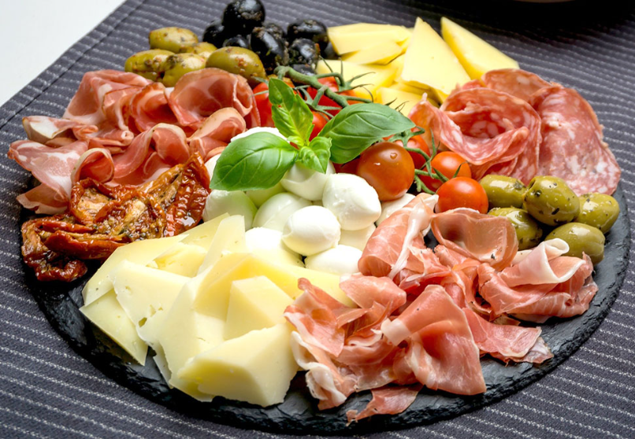 |
| Samosas Indias |
Triángulos crujientes rellenos de papas, guisantes y especias, servidos con chutney de tamarindo.
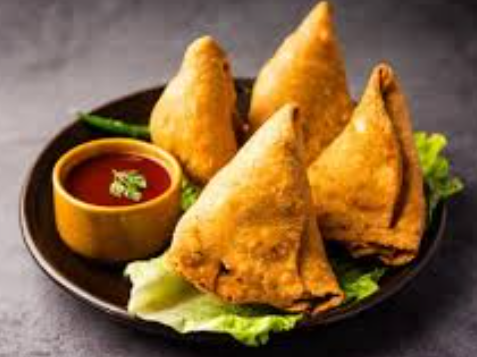 |
| Ceviche Peruano |
Pescado fresco marinado en limón con cebolla roja y cilantro, acompañado de maíz cancha.
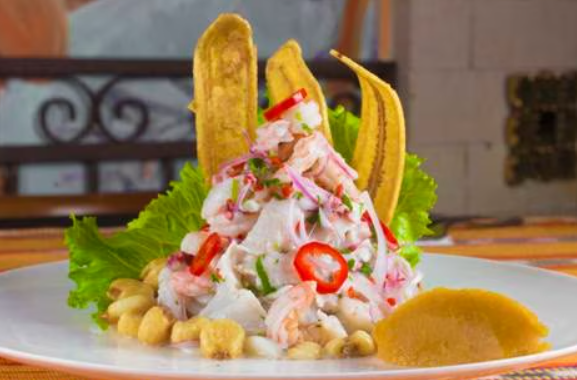 |
| Platos Principales |
Descripción |
| Paella Española |
Arroz Bomba cocido con mariscos frescos, pollo, chorizo y azafrán.
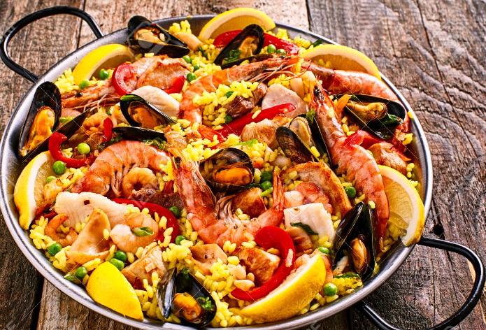 |
| Sushi de Fusión |
Variedad de rollos de sushi creativos con ingredientes frescos y salsas caseras.
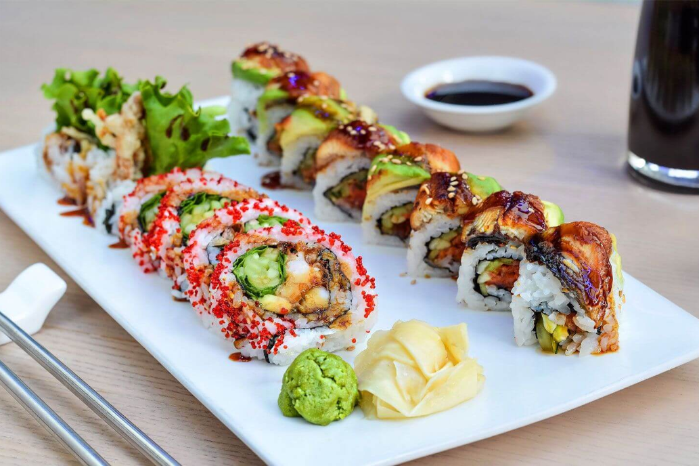 |
| Ratatouille Francés |
Un guiso de vegetales mediterráneos servido con una base de polenta.
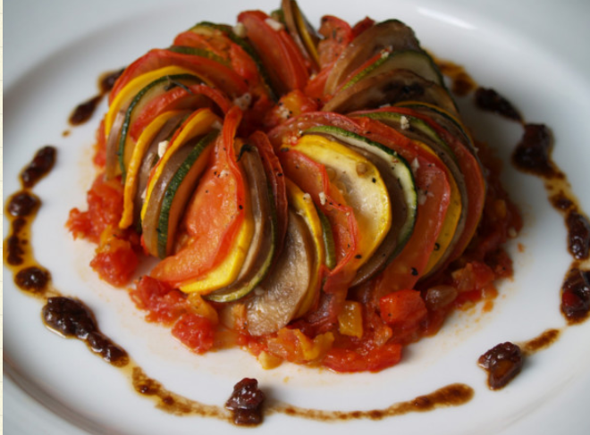 |
| Postres |
Descripción |
| Tiramisu Italiano |
Un postre clásico de capas de bizcocho empapado en café y crema de mascarpone.
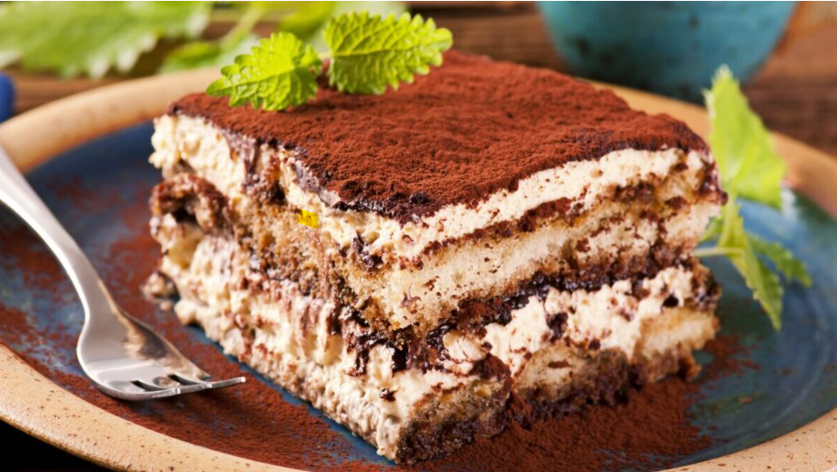 |
| Mochi Japonés |
Bolitas de arroz glutinoso rellenas de helado de pasta endulzada como té verde y mango.
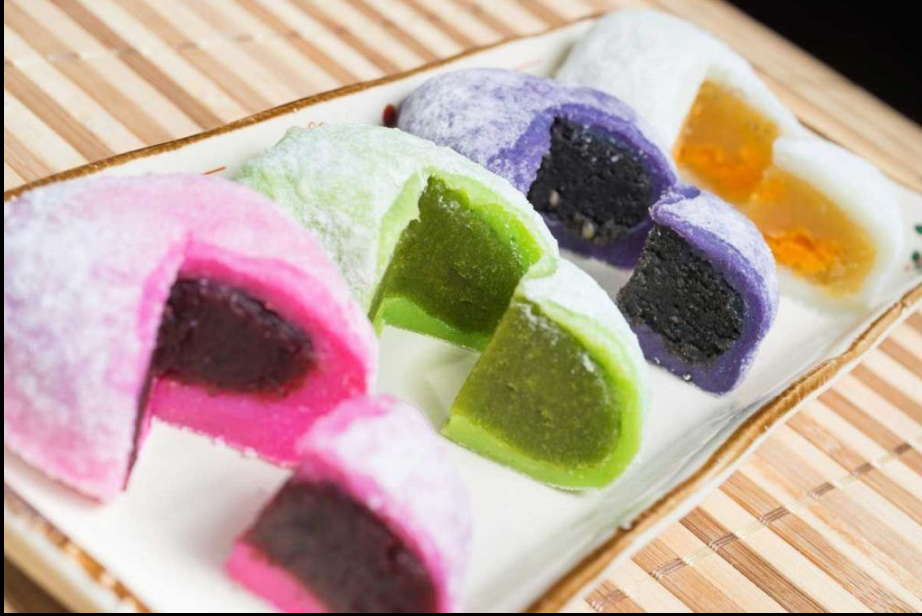 |
| Torta 3 Leches |
Es un pastel empapado en tres tipos de leche, de origen Venezolano.
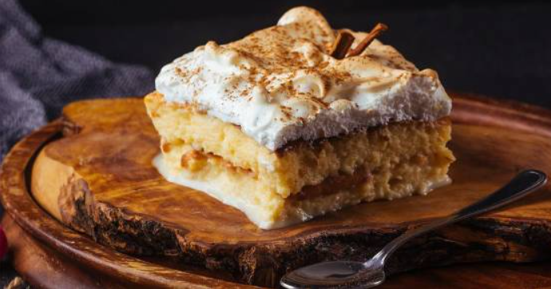 |
| Bebidas |
Descripción |
| Cócteles de la Casa |
Una selección de cócteles inspirados en diferentes regiones.
|
| Vinos Internacionales |
Una carta de vinos que destaca vinos de diferentes países para maridar con tu comida.
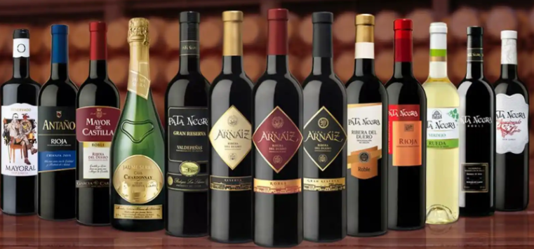 |
| Tés del Mundo |
Una variedad de tés de diferentes partes del mundo.
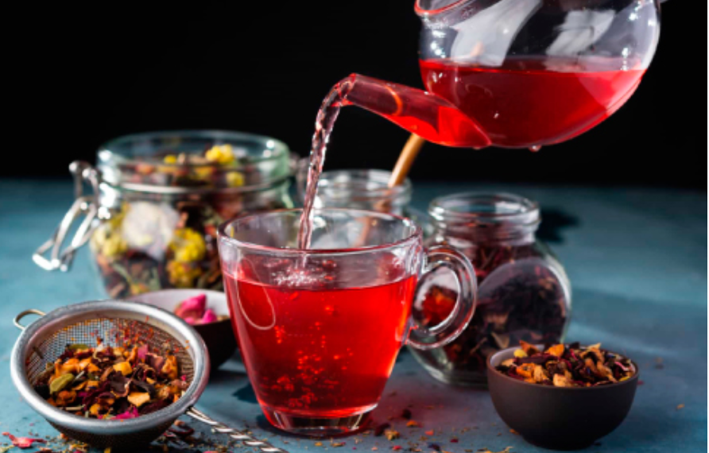 |